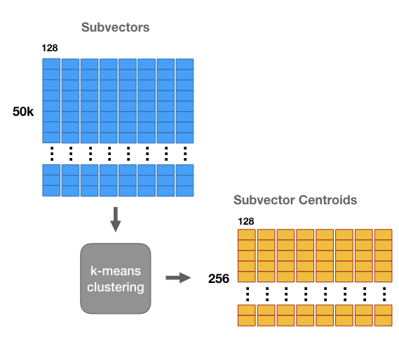

Faiss是Facebook开源的一个能够在海量数据中, 高效地进行邻近搜索的一个库, 下面就来介绍一下这个库的一些基本算法原理, 以及简单的使用.
前言
在我的之前一篇讲KD Tree的文章中, 就介绍了一种在邻近搜索中, 用空间换时间的数据结构, KD Tree, 在数据较小的情况下, 还是可以使用的, 能够把时间复杂度, 从$O(N)$降低到$O(\log N)$.
然鹅在大数据场景下, 数据(向量)的个数可能达到亿的量级, 此外, 向量维度的增加, 也会导致数据量进一步增大, 此时若想在内存中构建一棵KD Tree, 单机是肯定完成不了的.
如果能有一个库, 能够支持多种邻近搜索模式, 能够根据实际情况的需求, 能够在搜索精度, 速度, 内存占用之间进行平衡, 能够在磁盘上也能进行搜索, 那就好了♪(^∇^*)
Faiss站了出来: 没错, 正是在下OvO
Faiss是Facebook开源的一个库, 用C++写成, 并非常友好地提供了Python接口. Faiss可以用在实际的生产环境中, 下面对Faiss的部分基本原理进行介绍, 并展示简单应用.
精确模式
Faiss是支持多种模式的, 其中必然就少不了暴力搜索模式, 也可以称作精确模式, 因为要对所有的向量进行无损的遍历, 所以得到的结果也必然是准确的.
精确模型没有太多好说的, 下面看一下代码:
1 | # 创建向量 |
要使用Faiss进行搜索, 需要先创建索引, 这里的IndexFlatL2表示暴力搜索对应的索引, 并用欧氏距离作为指标.
后面会看到, 会用一些算法来加速或者压缩内存, 这时候除了创建索引, 还需要一个训练的过程, 不过IndexFlatL2并不需要训练.
1 | # 创建索引 |
1 | 是否已训练: True |
1 | # 搜索 |
1 | Index: |
为了同后面的加速模式做一下比较, 这里测试一下暴力搜索的速度:
1 | %timeit index.search(xq, k) |
1 | 416 ms ± 1.03 ms per loop (mean ± std. dev. of 7 runs, 1 loop each) |
加速搜索
下面来讲解Faiss中的加速搜索的方法, Faiss应该在实际工程细节中, 加入了大量的调优, 而这里仅从部分加速算法的角度来进行介绍.
搜索的时间, 一般来说取决于向量的数量以及维度, 不过可能多数时候向量的维度并不会太大, 更多的是取决于向量的数量.
但是这又不是训练模型, 总不能对向量进行抽样吧, 而像KD Tree那样又太费内存, 怎么办呢?
还是那个思路, 如果能够用一些方法, 减小不必要的搜索, 即把一些明显距离较远的向量排除, 再在小范围中搜索, 就会快很多.
Faiss这里的方法简单而有效, 用到了聚类(K-means)的方法. 即先用K-means对向量进行聚类, 每个向量都被划分到一个组中, 当对一个向量进行邻近搜索时, 先根据每个组的中心向量, 来判断哪些组中可能有该向量的邻近向量, 然后再到对应的组中进行精细地搜索.
这里的原理比较简单, 但有一些需要注意的地方. 首先是这种加速是有一定的代价的, 即得到的结果, 相比上面的暴力搜索模式, 可能并不完全一样.
同时, 有两个参数nlist与nprobe, 需要进行尝试与调节, 才能在实际的任务中, 取得较好的结果:
nlist聚类中心的数量.
在
nlist给定的情况下, 这个参数越大, 搜索的时间越小.nprobe每次在多少个组中进行搜索.
在
nlist给定的情况下, 这个参数越大, 搜索的时间越多, 结果越精准.
Faiss中一个比较重要的索引就是IndexIVFFlat, 利用聚类以及倒排方法进行加速, 在初始化的时候, 还需要一个编码器quantizer, 这里使用IndexFlatL2:
1 | # 加速搜索 |
1 | 是否已训练: False |
1 | 97.7 ms ± 3.22 ms per loop (mean ± std. dev. of 7 runs, 10 loops each) |
对比上面精确模式的约400ms, 这里花费的时间大约是其四分之一, 确实能够加速搜索.
节省内存
如果仅仅是能够加速, 是不够的, 还需要在尽量保证精度的情况下, 节省内存占用.
如何建设内存占用呢? 主要就是从向量维度上, 来进行考虑了, 即降维.
一提到降维, 可能就会想到PCA, 它是一个有效的无监督, 线性降维算法. 通俗地来说, 就是把原来高维的特征空间中的点, 映射到低维空间中. 关于PCA的具体算法原理, 还行做更多了解的同学, 可以去网上进行查阅. 在Faiss中, 也有对PCA的实现, 但这不是这里的重点, 就不做展示了~
除了使用PCA算法进行降维, 在Faiss中还有一种关键的算法, 即Product Quantizer, 简称PQ, 下面对PQ的原理进行阐述.
这里假设有一个$50000\times 1024$的向量矩阵, 每一行为一个$1024$维的向量.
现在把每个向量平均分成$m$个子向量, 假设$m=8$, 每个子向量$128$维, 如图:
对于这8组子向量, 分别使用K-means算法, 并设聚类中心数量为$256$, 结果如下:

这时候, 可以对每组子向量, 都用聚类的组群的编号(0-255), 来进行编码, 那么原本的一个$1024$维浮点数向量, 就可以用8维无符号整型向量代替:
这样, 内存占用缩减了多少呢? 原本的字节数为:
现在的字节数为:
缩减了512 ($=4096/8$) 倍!
上面的$m$可以用来控制具体的缩减程度, $m$越小, 则越更高缩减内存占用, 但是在搜索精度上会差一些.
那么… 这样转换了以后, 如何进行计算呢, 总不能直接拿着编号来计算吧OvO
要知道, 每组子向量的每个整数编号, 都是映射到一个聚类中心的, 那么在计算距离或者相似度的时候, 就可以将编号转变为真实向量(有损), 再进行计算.
具体有两种方式:
上图中, $x$表示待查询向量, $y$表示数据集中的向量, $q(\cdot)$表示将原本向量根据聚类, 划分到某个组群的中心向量. 左边的方式, 表示将$x,y$向量都先进行转换, 然后再计算; 右边的方式, 表示使用原始的$x$向量, 和转换后的$y$向量进行计算.
运用PQ的方式, 是能够有效地减少内存占用空间的, 并且也能够和上一节中的加速算法一起结合起来使用, 它们并不冲突♪(^∇^*)
在Faiss中, IndexIVFPQ就是同时使用了PQ算法来减少内存占用, 并也使用聚类和倒排来进行加速. 在原有的基础上, 增加了一个参数$m$, 用以控制子向量的划分个数.
1 | # 减小内存占用 |
1 | [[38423 69668 2747 90800] |
1 | %timeit index.search(xq, k) |
1 | 46.2 ms ± 981 µs per loop (mean ± std. dev. of 7 runs, 10 loops each) |
从测试结果来看, “降维”后在搜索时间上也有所降低.
小结
在这一篇中, 主要介绍了Faiss这个开源库的相关内容, 包括其用途, 部分特性及原理.
但关于Faiss的内容, 其实还远不止这些, 在真实的场景中, 是否将全部向量放入内存, 可能会用到GPU来加速计算, 使用哪一种索引, 参数如何选择, 在精度, 速度, 内存之间如何平衡, 都是需要试验与分析的.
那么需要优化的点不止一处, 如何进行抉择呢, 我认为一种不错的方法, 是对多数方面, 设定一个阈值, 达到阈值即可, 在此基础上, 对某一项, 或者少数某几项来进行优化, 就像一个带约束的优化问题那样. 比如搜索速度, 内存占用, 都可以设定一个阈值, 而搜索结果的精度, 作为在此基础上的优化目标.